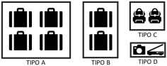

Termo de Concordância de Acordo.
Leia cuidadosamente estes termos de serviço, chamado a partir de agora, simplesmente “TERMO”, este contêm informações importantes sobre os direitos e obrigações para as 3 (três) partes: O usuário, chamado a partir de agora simplesmente “USUÁRIO”. E a empresa, responsável pelo guarda volume automatizado, chamada a partir de agora simplesmente de “CBS”, e o guarda volume automatizado, chamado a partir de agora, “LUNA”.
Ao acessar e contratar o serviço da “LUNA”, você concorda em cumprir e respeitar todos os itens de este “TERMO”.
Este “TERMO” constitue um “CONTRATO” entre o “USUÁRIO” e a “CBS”, regendo seu acesso a “LUNA” e seu uso,
incluindo seus subdomínios: site internet, aplicativos de celular,
tablet ou de outro dispositivo smart aplicável, e interfaces de programa do aplicativo, quando houver.
Em caso de dúvidas sobre este “TERMO”, por favor, procure um aconselhamento jurídico.
Serviços oferecidos pela “CBS”:
A “CBS” põe à disposição do “USUÁRIO” um guarda volume automatizado, onde o mesmo terá a possibilidade de alugar pequenos espaços, por um tempo determinado , por hora ou diária. A “LUNA” disponibiliza 4 tamanhos de espaços:
Modo de Pagamento:
O “USUÁRIO” se compromete a pagar a “CBS” o valor total do plano escolhido,
de acordo com a tabela de preço disponibilizada na “LUNA” no ato da contratação de um plano.
Os planos são divididos em 2 categorias, “POR HORA” e “POR DIÁRIA”
e em 4 subcategorias de tamanho, TIPO A - TIPO B - TIPO C - TIPO D.

A “CBS” se dar o direito de reavaliar sua tabela de tarifa a qualquer momento, sem aviso prévio. Em caso de locação vigente, o preço permanecerá o mesmo que no ato da contratação. Caso o “USUÁRIO” não venha a recuperar sua bagagem dentro do prazo estabelecido e a “CBS” venha a retificar a tabela de preço antes do prazo final, no calculo da cobrança extra, a nova tabela tarifaria será adotada.
O pagamento inicial será realizado no ato da contratação de uns dos pacotes disponíveis na “LUNA”.
O modulo estará acessível durante o tempo determinado escolhido pelo “USUÁRIO”, mediante uma senha de acesso, que será fornecida após a realização do pagamento.
Em caso de não recuperação de sua bagagem dentro do prazo de acessibilidade à “LUNA” contratado inicialmente, o acesso a sua unidade será momentaneamente suspenso, e será restabelecido somente após a identificação pela “CBS” do pagamento integral das pendências financeiras devidas.
Segurança e Monitoramento:
O “USUÁRIO” declara estar ciente como aceito que a “LUNA” utiliza um sistema de
monitoramento externo com filmagem e gravação de imagens através de câmeras,
nas dependências onde esta instalada. O “USUÁRIO” autoriza desde já a utilização
das imagens pela “CBS”, concedendo o direito de utilizar as imagens licitamente como bem lhe couber,
para a segurança da “CBS” e/ou do “USUÁRIO”.
Em caso de deterioramento do módulo de armazenamento “LUNA” ou de qualquer dependência pertencente ao ambiente onde estará implantada a “LUNA” por qualquer de seus usuários, a “CBS” se dá o direito de usar ou de repassar para terceiro, o conteúdo digital adequado judicialmente.
Você será responsável por manter a confidencialidade de sua Senha de acesso à “LUNA” e não poderá divulgar as referidas credenciais a terceiros.
Você deve notificar a “CBS” imediatamente, caso você tome conhecimento ou tenha qualquer motivo para suspeitar, que sua Senha foi extraviada, furtada, indevidamente apropriada ou ainda comprometida, ou em caso de qualquer uso ou suspeita de uso não autorizado de sua Conta. O Número de contato da “CBS” esta disponível na pagina inicial da tela e esta adesivado próximo à esta tela.
Você é responsável por toda e qualquer atividade conduzida através de sua senha, exceto se as referidas atividades não forem autorizadas por você e que você não tenha sido negligente, como não relatar o uso não autorizado ou a perda de suas credenciais.
Devido à sua natureza de atividades ininterruptas, a “CBS” não pode garantir uma disponibilidade e acessibilidade contínuas da Plataforma, sem necessidade de intervir de maneira emergencial ou programada nos equipamentos da “LUNA”, inclusive nos espaços de armazenamentos, livre ou reservados.
A “CBS” pode restringir a disponibilidade da Plataforma ou de certas áreas ou recursos a ela relacionados, caso seja necessário, considerando os limites de capacidade, a segurança ou a integridade de nossos servidores, ou para realizar medidas de manutenção que garantam o funcionamento devido ou melhoramento da Plataforma “LUNA”.
Para acessar e usar a Plataforma “LUNA”, é necessário que você seja um indivíduo com pelo menos 18 anos e que seja capaz de celebrar contratos vinculantes, que você informe seu nome completo, e-mail e numero de telefone.
A “CBS” pode tornar o acesso e o uso da Plataforma “LUNA”, ou certas áreas ou recursos de suas Plataformas, sujeitos a determinadas condições ou exigências, como a concordância deste “TERMO”, preenchimentos das informações solicitadas pela “LUNA” e outras condições ou exigências informadas neste documento.
Você deverá fornecer informações atuais, precisas e completas durante o processo de reserva do compartimento.
Você não poderá cadastrar mais de 1 (uma) Conta na “LUNA”, exceto se a “CBS” lhe autorizar a fazê-lo. Você não pode atribuir ou transferir sua Conta da “LUNA” para terceiros.
O acesso a “LUNA” é limitado a pessoa devidamente cadastrada como “USUÁRIO”, sendo proibido para a segurança de todos: compartilhar a senha de acesso ao modulo alugado ou transferir sua conta para terceiros.
Os itens descritos acima não são autorizados em nossos locais de armazenamento.
O armazenamento de algum desses itens poderá resultar na suspensão imediata da locação da unidade de armazenamento.
Em caso de suspeita de violação das normas de armazenamento dos itens permitidos, a “CBS” se dá o direito de abrir a unidade de armazenamento alugada e de retirar e estocar em locais mais adequados os itens não permitidos.
Em casos de itens proibidos por lei, a “CBS” entregará os itens e os dados do usuário à uma delegacia de polícia na mesma área geográfica que o local de armazenamento.
Prazo de Contratação:
É obrigatório a retirada de todos os seus pertences das unidades da “LUNA” uma vez que sua sessão de locação expirou.
A “CBS” se dá o direito de abrir qualquer “UNIDADE” após um prazo de 3 dias, a contar do vencimento do prazo de locação inicial, por questão de segurança e de higiene. Os pertences serão então, armazenados em um outro local, administrado pela “CBS”.
Após um prazo de 60 dias, sem manifestação do “USUÁRIO” ou de um representante legal, os pertences serão considerados como perdidos e encaminhados até às autoridades competentes, retirando da “CBS” toda a responsabilidade sobre os pertences do referido “USUÁRIO”. Uma vez um plano escolhido e contratado, não será possível obter um reembolso por qualquer motivo que seja.
Direito, Responsabilidade e Resolução de Litígios:
Aceitando este “Termo” o “USUÁRIO” concorda que qualquer litígo seja resolvido por uma arbitragem do setor jurídico da “CBS” e renúncia à qualquer ação judicial.
O “USUÁRIO”, em nenhum dos casos, poderá sem a autorização expressa por escrito da “CBS” tirar fotografias de nossos equipamentos, sistema operacional, para seu uso próprio ou para divulgar para terceiros.
O uso correto da “LUNA” é de inteira responsabilidade do “USUÁRIO”. Qualquer tipo de dano ao equipamento, mobiliário ou ambiente do serviço da “LUNA” deverá ser ressarcido pelo “USUÁRIO”.
A “CBS” se dá o direito de recorrer judicialmente contra o “USUÁRIO”, e de usar o conteúdo digital das câmeras de monitoramento contra o “USUÁRIO”, caso seja constatado que o mesmo chegou a deteriorar de maneira voluntária ou acidental o equipamento “LUNA” pertencente a “CBS”.
O “USUÁRIO” deverá informar quaisquer irregularidades encontradas no guarda-volumes assim que as perceber, para evitar sua responsabilização pelos danos, entrando em contato com um dos agentes da “CBS”, com os contatos informados na página inicial e adesivado na estação de pagamento da “LUNA”.
Caso qualquer disposição deste “TERMO” seja tida como ilegal, inválida ou inexequível total ou parcialmente, por qualquer legislação, essa disposição ou parte dela será, naquela medida, considerada como não existente para os efeitos deste, mas a legalidade, validade e exequibilidade das demais disposições contidas neste “TERMO” não serão afetadas.
Sujeito à sua conformidade com este “TERMO”, a “CBS” lhe concede uma licença intransferível, revogável e limitada para seu uso pessoal e não comercial.